Repères de la famille
Vingt-sept armes de mêlée : baïonnettes, couteaux, machettes, haches, piolets, tomahawks, glaives et une labrys de dix-neuf kilos. Ces armes n’ont ni balle ni munition, et le catalogue le dit explicitement : leur calibre est « sans munition », leur cadence est nulle, et leur prix de marchand n’existe pas. Elles n’occupent pas la même place qu’une arme à feu : elles ne servent ni à l’échange de tirs ni à la distance, et leur intérêt tient à trois chiffres seulement.
18 à 166
Dégâts de taille. La labrys enchaînée, à 166 points de dégâts de taille, est presque six fois plus puissante que le couteau Bars A-2607 Damas, à 18 points. Le haut de la famille : haches de secours à 31, machettes à 30 et 33, tomahawks à 25 et 32.
25 à 199
Dégâts de pointe. La labrys atteint 199 points de dégâts de pointe et le glaive tactique APOK 57 ; le couteau Bars A-2607 95Kh18 ferme la marche à 25. La pointe prime toujours sur la taille.
0,35 à 0,90
Rayon d’atteinte. En mètres : 0,35 pour les couteaux les plus courts, 0,45 pour les haches, 0,55 pour la pelle MPL-50, 0,80 pour le glaive tactique et 0,90 pour la labrys. Le rayon décide de l’utilité réelle de l’arme.
La labrys : 19,08 kilos. C’est l’arme la plus lourde de tout le catalogue, cinq fois le poids d’un fusil d’assaut. Son rayon d’atteinte de 0,90 mètre et ses 199 points de dégâts de pointe en font l’arme de mêlée la plus redoutable du jeu, à condition de pouvoir la porter et la manier.
Le catalogue de la famille
Les vingt-sept armes de mêlée de l’export, avec leurs dégâts de taille, leurs dégâts de pointe et leur rayon d’atteinte.
| Image | Arme | Calibre | Ergonomie | Recul vertical | Recul horizontal | Cadence (c/min) | Distance efficace (m) | Modes de tir | Munitions | Presets |
|---|---|---|---|---|---|---|---|---|---|---|
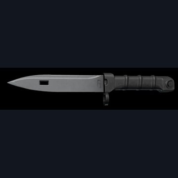 | Baïonnette 6Kh5 | Sans munition | None | None | None | None | None | — | 0 | 0 |
 | Baïonnette ER FULCRUM | Sans munition | None | None | None | None | None | — | 0 | 0 |
 | Bâton de police PR-Taran | Sans munition | None | None | None | None | None | — | 0 | 0 |
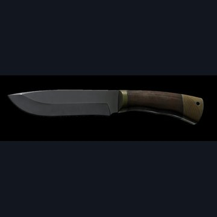 | Couteau Bars A-2607 95Kh18 | Sans munition | None | None | None | None | None | — | 0 | 0 |
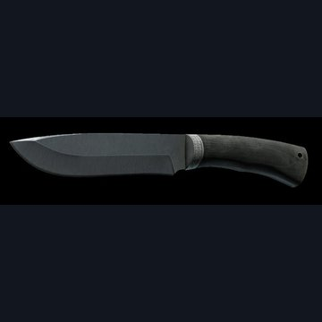 | Couteau Bars A-2607 Damas | Sans munition | None | None | None | None | None | — | 0 | 0 |
 | Couteau de cultiste | Sans munition | None | None | None | None | None | — | 0 | 0 |
 | Glaive tactique APOK Wasteland | Sans munition | None | None | None | None | None | — | 0 | 0 |
 | Hache antique | Sans munition | None | None | None | None | None | — | 0 | 0 |
 | Hache de secours | Sans munition | None | None | None | None | None | — | 0 | 0 |
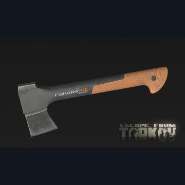 | Hachette de camping | Sans munition | None | None | None | None | None | — | 0 | 0 |
 | KA-BAR USMC Fighter knife | Sans munition | None | None | None | None | None | — | 0 | 0 |
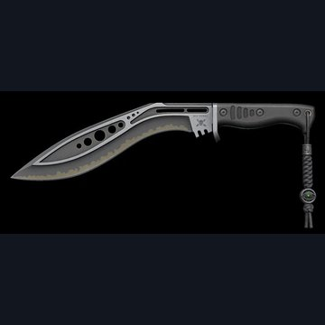 | Kukri tactique United Cutlery M48 | Sans munition | None | None | None | None | None | — | 0 | 0 |
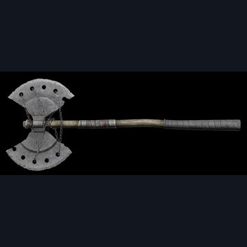 | Labrys enchaînée | Sans munition | None | None | None | None | None | — | 0 | 0 |
 | Machette de survie SP-8 | Sans munition | None | None | None | None | None | — | 0 | 0 |
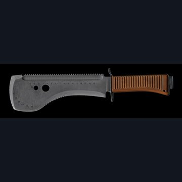 | Machette de survie UVSR Taiga-1 | Sans munition | None | None | None | None | None | — | 0 | 0 |
 | Microtech Jagdkommando knife | Sans munition | None | None | None | None | None | — | 0 | 0 |
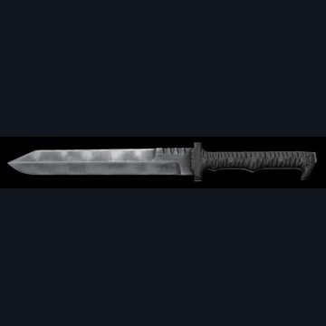 | Miller Bros. Blades M-2 Tactical Sword (Brown) | Sans munition | None | None | None | None | None | — | 0 | 0 |
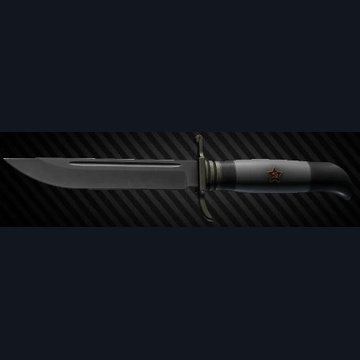 | NKVD Finka knife | Sans munition | None | None | None | None | None | — | 0 | 0 |
| NKVD Finka knife | Sans munition | None | None | None | None | None | — | 0 | 0 | |
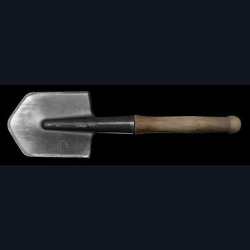 | Pelle MPL-50 | Sans munition | None | None | None | None | None | — | 0 | 0 |
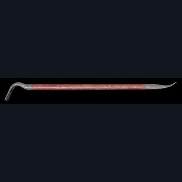 | Pied-de-biche Freeman | Sans munition | None | None | None | None | None | — | 0 | 0 |
 | Piolet Red Rebel | Sans munition | None | None | None | None | None | — | 0 | 0 |
 | Poignard à pousser Akula | Sans munition | None | None | None | None | None | — | 0 | 0 |
| Poignard à pousser Akula | Sans munition | None | None | None | None | None | — | 0 | 0 |
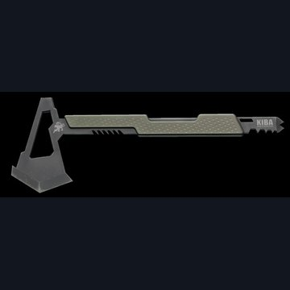 | Tomahawk tactique Kiba Arms | Sans munition | None | None | None | None | None | — | 0 | 0 |
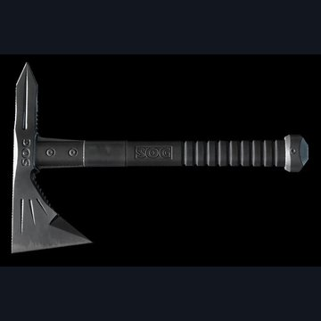 | Tomahawk tactique SOG Voodoo Hawk | Sans munition | None | None | None | None | None | — | 0 | 0 |
 | Épée tactique Miller Bros. Blades M-2 | Sans munition | None | None | None | None | None | — | 0 | 0 |
Les colonnes de cadence, de recul et de distance efficace restent vides : ces armes n’en ont pas. Le tableau les conserve pour que la comparaison avec les autres familles reste lisible.
Presets publiés
Aucune des vingt-sept armes de mêlée ne porte de preset dans l’export : il n’y a rien à monter sur une lame, et le catalogue ne propose donc aucune configuration pour cette famille. Le tableau est vide, et cette absence fait partie du relevé.
Aucun preset publié pour cette famille dans l’instantané consulté.
Acquisition et disponibilité
Aucune des vingt-sept armes de mêlée n’a d’offre marchande dans l’instantané. Elles s’obtiennent en raid, dans les conteneurs, sur les corps, ou par tâche. Deux armes de la famille sont d’ailleurs désignées « baïonnette », et se trouvent normalement sur une arme à feu plutôt que seules.
Aucune vente en magasin relevée pour cette famille dans l’instantané consulté.
Le poids, c’est de l’ergonomie perdue ailleurs. Une labrys de 19 kilos ne se porte pas dans un raid comme une arme secondaire : elle occupe la place d’une armure, d’un sac, ou d’un rifle. C’est le seul arbitrage que cette famille pose.
Comment s’équiper
- Comparer pointe et taille, pas le nom. Le catalogue donne deux chiffres distincts : les dégâts de taille s’appliquent à une zone large, les dégâts de pointe à un point précis. Un couteau à 24 points de taille et 31 de pointe n’est pas équivalent à un couteau à 24 et 43 : la pointe change tout.
- Le rayon décide de l’usage. À 0,35 mètre, une lame ne sert qu’au contact le plus proche ; à 0,80 et 0,90 mètre, la portée change la façon de s’approcher. Les haches et la labrys ont une utilité de combat que les couteaux courts n’ont pas.
- Ne pas confondre utilité et prix. Aucune de ces armes n’a de valeur marchande dans l’export. Leur intérêt est tactique, et il se mesure au moment où l’arme à feu est vide ou inutilisable — pas dans une préparation de raid classique.
Sources et limites
Les dégâts de taille, les dégâts de pointe, le rayon d’atteinte et le poids viennent de l’export communautaire du 18 novembre 2026. Ces valeurs décrivent l’arme au corps à corps ; elles ne décrivent pas la facilité de les utiliser, ni les conditions dans lesquelles un joueur peut réellement s’en servir.
- Tarkov.dev — catalogue des armes et de leurs presetsDonnées communautaires
- Tarkov.dev — items, équipement, munitions et skills (PvP ; autres modes via le catalogue)Données communautaires
- Tarkov.dev — catalogue officiel des exports JSONDonnées communautaires
- Escape from Tarkov WikiWiki communautaire
- KappaGuide — outils, cartes et guidesOutil communautaire